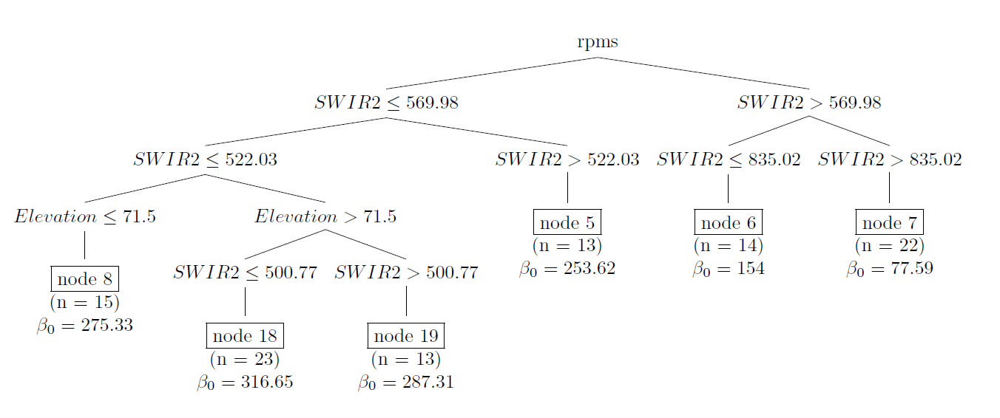

Spatial sampling with R
2021-12-04
Preface
Since the start of The R Series of Chapman & Hall/CRC in 2011 numerous books have been published on the statistical analysis and modelling of data using R. To date no book has been published in this series on how these data can best be collected. From my point of view this was an omission, as scientific research often starts with data collection. If the data collection is part of the project, it might be a good idea to start thinking right at project start instead of after the data have been collected, to make a well-founded decision on how many data are needed, and on the type of sampling design.
Over the past decades numerous wall-to-wall data sets have been collected by remote sensing devices such as satellites and drones. These remote sensing images are valuable sources of information on the natural environment and resources. The question may arise how useful it still can be in this big data era to collect data in the field at a restricted number of sampling locations. Do we really need these data to estimate a population mean or total, for instance of the aboveground biomass or carbon stocks in the soil, or to map these study variables? In many cases the answer is that it is indeed still useful to collect sample data on the study variable, because the remote sensing images provide only proxies of the study variable. The variables derived from the remote sensing images can be related to the study variable, but we still need groundtruth data of the study variable to model this relation. By combining the wall-to-wall data of covariates and the sample data of the groundtruth we can increase the accuracy of the survey result compared to using only one of these data sources.
The handbook Sampling for Natural Resource Monitoring (SNRM) (de Gruijter et al. 2006) presents an overview of sampling strategies for the survey of natural resources at a given point in time, as well as for how these resources can be monitored through repeated surveys. The book presented here can be seen as a follow-up of SNRM. In SNRM spatial sampling designs for survey and space-time designs for monitoring are described and illustrated with notional and real-world examples. Estimators for global and local quantities in space and in space-time, and for the variance of these estimators are presented. However, neither the computer code for how a sample with a given design can be selected, nor the code for how the estimates can be computed is presented in SNRM. The publication at hand fills this gap.
This book describes and illustrates classical, basic sampling designs for spatial survey, as well as more recently developed, advanced sampling designs and estimators. Part I of the book is about random sampling designs for estimating a mean, total, or proportion of a population or of several subpopulations. Part II focuses on sampling designs for mapping.
The computer code is written in the popular programming language R (R Core Team 2021). There are several good reasons for choosing R as a language. First of all, it is open-source, giving users the right to view the source code and modify it to their needs. Second, as a result of this open-source, numerous add-on packages have been developed, and this number is still increasing. Happily enough, also quite a few add-on packages have been published for sampling design and analysis. All these add-on packages make the writing of computer code much more simple. Even very advanced statistical methods for sampling design and statistical analysis are now within the reach of many scientists: only a few lines of R code are needed to do the work. A risk is that the appliers of the packages may not fully understand the implemented statistical method. This understanding is not needed to obtain a result. For this reason I decided not to jump to the add-on packages right after the theory, but to follow a more gradual approach. First I show in the simplest possible R code how a sample can be selected with a given sampling design, and how the (sub)population parameters can be estimated. After this I point out how the same result can be obtained with an add-on package.
The target group of this book are practitioners of sample surveys, as well as students in environmental, ecological, agricultural science or any other science in which knowledge about a population of interest is collected through spatial sampling. I have added exercises to most chapters, making this book suitable as a textbook for students. The answers to the exercises can be found in the appendix of this book. Large parts of the book are self-contained, requiring no prior knowledge of statistics. For the chapters in Part I on more advanced sampling designs, such as balanced sampling, and advanced estimators of (sub)population parameters (model-assisted estimators), knowledge of matrix algebra and regression analysis is required. For the final chapters of Part II basic knowledge of geostatistics is required. This knowledge is also needed for some chapters in Part I. For this reason I have added a chapter introducing the basics of geostatistics (Chapter ??).
A gitbook version of this book (html files) is available in the github repository SpatialSamplingwithR. Here you can also find the R scripts of the exercises. This is also the place where you can report errata and comment on text and/or R code. Updates of the book can also be found in the github repository.
Information about the version of R and the versions of the R packages used to compile this book can be found in the file SessionInfo.rds on github. My intention is to update the book as soon as a new version of an R package is available on CRAN which requires an update of the R code.
Acknowledgements
In 2006 our handbook Sampling for Natural Resource Monitoring (SNRM) was published (de Gruijter et al. 2006). Soon after this milestone Jaap retired from Wageningen University and Research (WUR). Now I arrived in the final stage of my career at WUR. For a couple of years I had been thinking of a revision of our handbook, to repair errors, and to include new developments in sampling design. Then I realised that to increase the impact of SNRM, it might be a better idea to write a new book, showing by means of computer code how the sampling designs can be implemented, and how the sample data can be used in statistical inference.
A nice side effect of the publication of SNRM was that I was asked to give sampling courses at many places in the world: China, Ethiopia, Uzbekistan, Australia, and various countries in the European Union. I have very pleasant memories of these courses, they made my life as a scientist very joyful. For these courses I wrote numerous scripts with computer code, using the popular programming language R (R Core Team 2021). My naïve idea was that all I had to do was to bundle these R scripts into an Rmarkdown document (Xie, Dervieux, and Riederer 2020), and add some text explaining the theory and the R code. As usual, it proved to be much more work than expected, but I am very happy that I was able to finish the job just before my retirement. My experience as a statistical consultant is that many researchers pay little attention to the method for data collection. Too many researchers start thinking when the data are there. Often I had to conclude that the way the data were collected was suboptimal, or even unsuitable for their aim. I hope that this new book may help researchers, practitioners, and students to implement proper sampling designs, tailored to their problems at hand, so that valuable data are collected that can be used to answer the research questions.
I could not have written this book without the help of many fellow researchers. First, I am very grateful for the support I received from the authors of various packages used in this book: Thomas Lumley for his support with package survey, Yves Tillé and Alina Gabriela Matei with package sampling, Anton Grafström with package BalancedSampling, Giulio Barcaroli and Marco Ballin with package SamplingStrata, Andreas Hill and Alex Massey with package forestinventory, and Martins Liberts with package surveyplanning. No need to say that I am responsible for all shortcomings of the R code.
Second, I would like to thank the following researchers for their valuable comments on (parts) of the book: Gerard Heuvelink (Wageningen University and ISRIC World Soil Information, Netherlands), Yuha Heikkinen (Luke, Natural Resources Institute, Finland), David Rossiter (Cornell University, USA and ISRIC World Soil Information, Netherlands), Steve Stehman (SUNY College of Environmental Science and Forestry, USA), Anton Grafström (Swedish University of Agricultural Sciences), Dennis Walvoort (Wageningen University and Research, Netherlands), and Ben Marchant (British Geological Survey, United Kingdom). Dennis Walvoort also was very supportive with the building of the R package sswr containing the data sets and some functions used in this book.
Finally, I would like to thank Alexandre Wadoux (University of Sydney) for preparing the data set of aboveground biomass and numerous environmental and climatological covariates of Eastern Amazonia (Brazil); Coen Bussink (United Nations Office on Drugs and Crime) for giving permission to use data on the occurrence of opium poppy fields in Kandahar (Afghanistan); Akmal Akramkhanov for providing the data set with measurements of the salinity of soil at a farm which is part of a regional Cotton Research Station in Khorezm (Uzbekistan), collected in the ZEF/UNESCO Landscape Restructuring project in the Khorezm province, with financial support by the German Ministry for Education and Research (BMBF; project number 0339970A); Lin Yang (Nanjing University) and A-Xing Zhu (Nanjing Normal University) for giving permission to use the data on soil organic matter concentration in Xuancheng (Anhui province, China) collected in a project supported by the National Natural Science Foundation of China (project numbers 41471178, 41971054, 41431177); the Ethiopian Agricultural Transformation Agency (my contact was Hailu Shiferaw) for allowing me to use the soil organic matter data of the western part of the Amhara region in Ethiopia which I used for training; Siegfried Hofman (Flemish Institute for Technological Research) for giving permission to use the nitrate-N data of several agricultural fields in Flanders (Belgium); and Budiman Minasny (University of Sydney) for giving permission to use the raster maps with terrain attributes in Hunter Valley (Australia).
Last but not least, I would like to thank my sister-in-law Marijke Compaijen who took up the Sisyphian work of editing the entire manuscript. She corrected numerous errors, such as grammatical errors, inconsistent use of terms, missing commas and incorrect use of them, typos, et cetera. I am very grateful for her extremely precise work.
0.1 Custom blocks
\[\begin{equation} y=x \tag{1} \end{equation}\]
\(\textdegree\)
kg m\(^3\)
function sample.int
Equation (1)
tst
consistent1
(source: https://www.statlect.com/glossary/consistent-estimator)
0.2 Figure captions with latex
Mat\(\text{{\'e}}\)rn
Matérn (error when used in caption)
mg kg\(^{-1}\) (error when used in caption)
Cum-root-f
\(\textit{Cum-root-f}\)

En hier gaat de tekst verder
0.3 Lists
This is a list
- item 1
- item 2 By using two leading , the paragraph within the list item should be indented
Another list
- item 1, with trailing space
- item 2
- subitem 1, two leading tabs
- subitem 2
number <- 7.00027